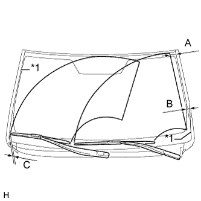
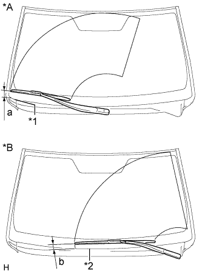
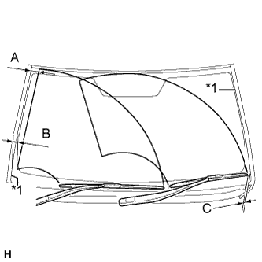
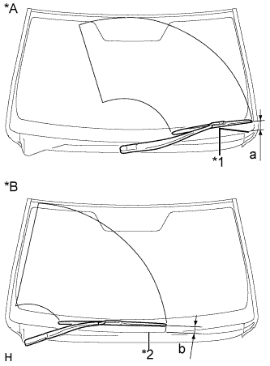

ЭЛЕКТРОДВИГАТЕЛЬ ПЕРЕДНЕГО СТЕКЛООЧИСТИТЕЛЯ > ПРОВЕРКА БЕЗ СНЯТИЯ С АВТОМОБИЛЯ |
| 1. ПРОВЕРЬТЕ ЭЛЕКТРОДВИГАТЕЛЬ СТЕКЛООЧИСТИТЕЛЯ ВЕТРОВОГО СТЕКЛА В СБОРЕ (для моделей с левосторонним рулевым управлением) |
|  |
Приведите в действие передние стеклоочистители, одновременно распыляя омывающую жидкость на ветровое стекло. Убедитесь, что передние стеклоочистители работают надлежащим образом и не задевают кузов автомобиля.
| Участок | Нормальное состояние |
| А | 47,5 мм (1,87 дюйма) |
| B | 30,4 мм (1,20 дюйма) |
| C | 9,5 мм (0,374 дюйма) |
| *1 | Молдинг Край |
|  |
Остановите работу электродвигателя и тяги переднего стеклоочистителя.
| *A | Для правой стороны |
| *B | Для левой стороны |
| *1 | Кромка бокового уплотнения кожуха |
| *2 | Край решетки |
Проверьте положение автоматического ограничителя хода.
| Участок | Нормальное состояние |
| a | 35,6 - 55,6 мм (1,40 - 2,19 дюйма) |
| b | 18,9 - 38,9 мм (0,744 - 1,53 дюйма) |
| 2. СНИМИТЕ ЭЛЕКТРОДВИГАТЕЛЬ СТЕКЛООЧИСТИТЕЛЯ ВЕТРОВОГО СТЕКЛА В СБОРЕ (для моделей с правосторонним рулевым управлением) |
|  |
Приведите в действие передние стеклоочистители, одновременно распыляя омывающую жидкость на ветровое стекло. Убедитесь, что передние стеклоочистители работают надлежащим образом и не задевают кузов автомобиля.
| Участок | Нормальное состояние |
| А | 47,5 мм (1,87 дюйма) |
| B | 30,4 мм (1,20 дюйма) |
| C | 13,0 мм (0,512 дюйма) |
| *1 | Молдинг Край |
|  |
Остановите работу электродвигателя и тяги переднего стеклоочистителя.
| *A | Для левой стороны |
| *B | Для правой стороны |
| *1 | Кромка бокового уплотнения кожуха |
| *2 | Край решетки |
Проверьте положение автоматического ограничителя хода.
| Участок | Нормальное состояние |
| a | 35,6 - 55,6 мм (1,40 - 2,19 дюйма) |
| b | 18,9 - 38,9 мм (0,744 - 1,53 дюйма) |